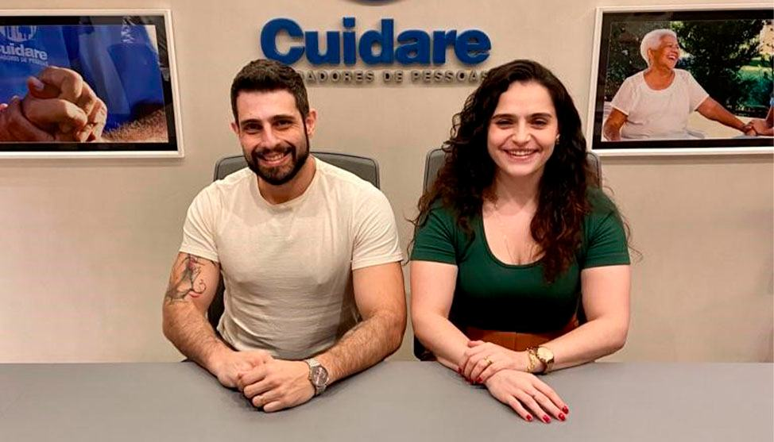
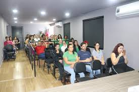
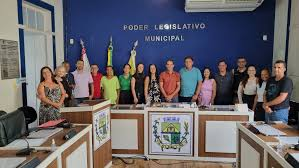
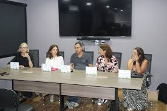

Polo Cuidare Neurodivergente é inaugurado em Piau
Fonte e fotos: Prefeitura de Piau
Piau deu um passo histórico com a implantação do Polo Cuidare Neurodivergente. O município é o primeiro da Zona da Mata a contar com o projeto, tornando-se referência na promoção da saúde mental, com acolhimento especializado a crianças e pré-adolescentes com diagnóstico de Transtorno do Espectro Autista (TEA).
A iniciativa conta com várias parcerias, como o Instituto Soul, Fundo da Infância e Adolescência de Piau, Projeto Formando Cidadãos, a Câmara Municipal, entre outros.



“Além de trazer o projeto, é preciso dar todo o suporte para que ele floresça e dê frutos...” — Prefeito Wander Loures
Comentários
Projeto SYNAPSO